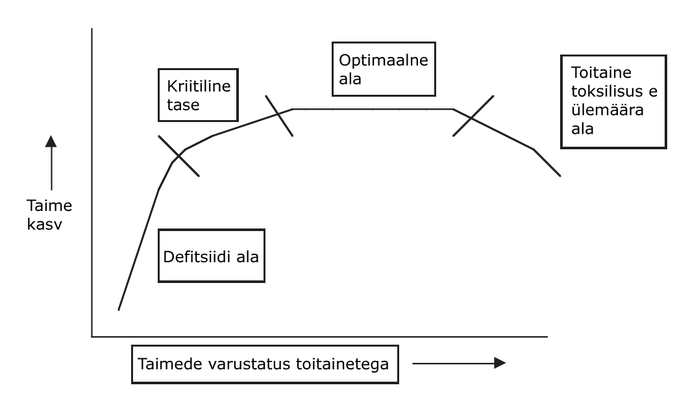

Kõiki organismi eluks ja kasvuks vajalikke aineid nimetatakse toitaineteks. Vee ökoloogias kasutatakse seda mõistet süsteemis oleva fosfaadi (PO43-) ja nitraadi (NO3-) hulgale osutamiseks. Meie missiooni kontekstis on oluline mõista, et taimed (tootjad) kasutavad fosfaati ja lämmastikku valkude, nukleotiidide (DNA) ja teiste orgaaniliste molekulide tootmiseks. Seega ei saa taim lämmastiku ja fosfaadi puudumisel kasvada.
Milline on seos toitainete kontsentratsiooni ja primaarproduktsiooni suuruse vahel? Sellest seosest mõtlemisel on hea kasutada nn tolerantsuse mõistet. Organismid suudavad elada (abiootiliste) tingimuste teatud ulatuses. Näiteks temperatuurigradiendi puhul on kaks väärtust – minimaalne temperatuur ja maksimaalne temperatuur, mis määravad liigi ellujäämiseks ülemise ja alumise piiri. Tingimused alla miinimumi ja üle maksimumi põhjustavad organismide ellujäämiseks liialt suurt stressi. Optimaalne vahemik on miinimumi ja maksimumi vahel, kus temperatuur oleks sellele konkreetsele liigile kõige soodsam. Samamoodi on taime liikidel iga toitaine kohta kindel tolerantsuse vahemik. Kindlast kontsentratsioonist allpool kannatab organism defitsiidi sümptomite all. Kui teatud toitaine kontsentratsioon on väga kõrge, võib see organismile hoopis toksilist mõju avaldada. Kontsentratsiooni määr, millest allpool taimedel defitsiidi sümptomid avalduvad, on toitaineti erinev. Lisaks on erinevused ka erinevate liikide vahel: mõned taimed tulevad puudujääkidega toime paremini kui teised.
Hüpoteetiline (teatud) toitaine tolerantsuse piir.